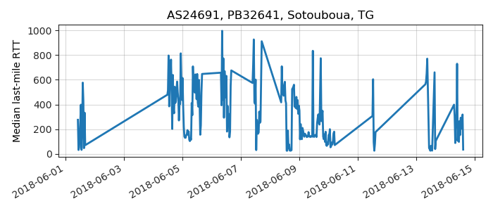

---
layout: default
title: Last-mile delay survey / 2018-06-01 / AS24691
---
AS24691, TOGOTEL-AS TogoTelecom, Togo, TG
Summary
- Daily last-mile fluctuations: mild
- Number of probes: 9
- APNIC eyeball rank: 735
- Daily fluctuations: True
- Main frequency: 0.0417
- Average peak-to-peak amplitude: 2.51ms
Aggregated last-mile queuing delay
Periodogram
24H profile
Probes' last-mile RTT

- 